Position trong CSS được sử dụng với mục đích định vị vị trí hiển thị của các phần tử thẻ HTML và thường dùng trong việc xây dựng CSS cho menu nhiều cấp, tooltip và một số chức năng khác có liên quan đến vị trí.
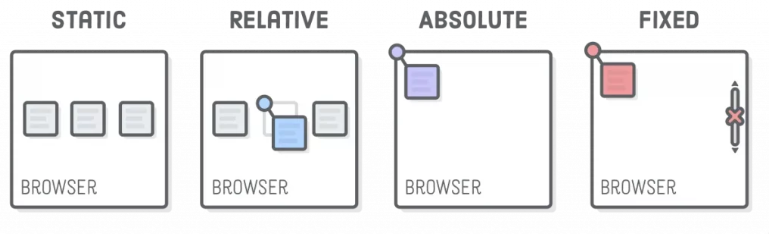Khi thiết kế layout cho website, nếu chuyển từ file thiết kế ở định dạng HTML thì việc sử dụng thuộc tính position trong CSS là điều bắt buộc. Hiểu một cách đơn giản thì thuộc tính position xác định vị trí của một phần tử ở trên trang. Có năm loại position khác nhau trong CSS là: static.
Trước khi đi sâu vào việc giải thích các giá trị trong position, hãy cùng trang bị một chút kiến thức về các thuộc tính về vị trí như top, right, bottom và left.
Khi sử dụng phần tử cha có thuộc tính position:relative, nếu muốn canh phần tử con theo phần tử cha và sử dụng position:absolute thì chúng ta sử dụng các thuộc tính vị trí ở trên để căn chỉnh.
Cú pháp của position trong CSS là:
position: value;
Trong đó value có có thể nhận những giá trị dưới đây:
Xét một ví dụ dưới đây, trong đó thuộc tính position trong CSS nhận giá trị static.
CSS:
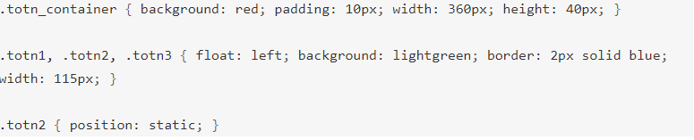HTML:
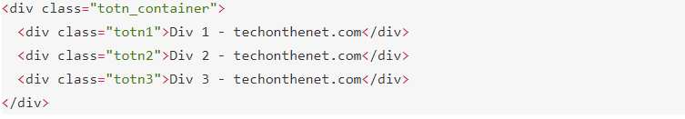Kết quả:
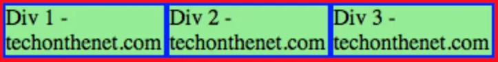Trong ví dụ này ta đã tạo 3 div, được đặt thành float left và được đặt trong một div khác với class tên totn_container. Mỗi div được gán cho một class, lần lượt là totn1, totn2 và totn3. Sau đó ta cho class totn2 nhận giá trị position là static. Đây cũng chính là giá trị vị trí mặc định nên kết quả sẽ không có gì thay đổi, vì vậy nó tương đương với CSS dưới đây:
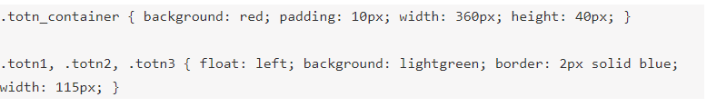Bây giờ giả sử ta cho div thứ hai có thuộc tính position nhận giá trị relative. Khi đó CSS sẽ có dạng như sau:
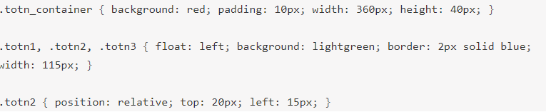Và HTML:
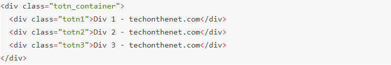Kết quả:
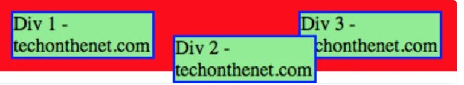Trong ví dụ trên, ta đã đặt giá trị position của class 2 thành relative, thuộc tính top và left lần lượt nhận giá trị 20px và 15px. Khi đó phần thử div (tương ứng với class này) sẽ di chuyển 20px xuống dưới và sang trái 15px so với vị trí mặc định.
Tiếp theo, hãy thử xem ví dụ về thuộc tính position absolute trong CSS:
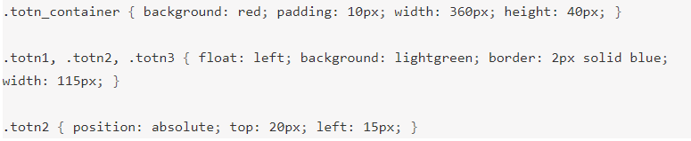Trong HTML:
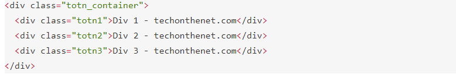Kết quả:
Qua đoạn code trên, ta đã di chuyển phần tử div của class totn2 vào trong parent của nó, với vị trí tuyệt đối là 20px về phía trên và 15px về phía bên trái của container.
Xét đoạn code CSS sau:
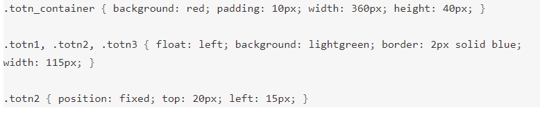HTML:
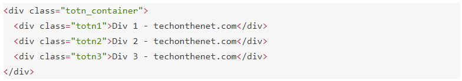Kết quả:
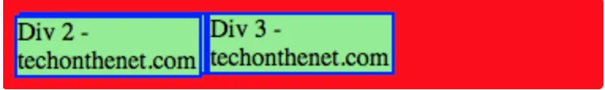Trong ví dụ này, ta đã đặt giá trị fixed cho thuộc tính position của class totn2, đồng thời giá trị của top và left cũng lần lượt là 20px và 15px. Khi đó phần tử div được chuyển vào trong viewport của màn hình tại vị trí cố định là 20px lên trên và 15px về phía bên trái của viewport.
Kết quả cũng khá giống với ví dụ của thuộc tính position absolute, tuy nhiên khi ta cuộn màn hình thì phần tử div này vẫn sẽ nằm cố định ở một vị trí ở trên viewport của màn hình.
Thuộc tính này không được hỗ trợ quá nhiều trong cộng đồng làm web và không tương thích với một số trình duyệt cũ. Về cơ bản thì phần tử sẽ linh động chuyển đổi giữa hai trạng thái relative và fixed để thay đổi vị trí dựa trên thao tác cuộn của người dùng.